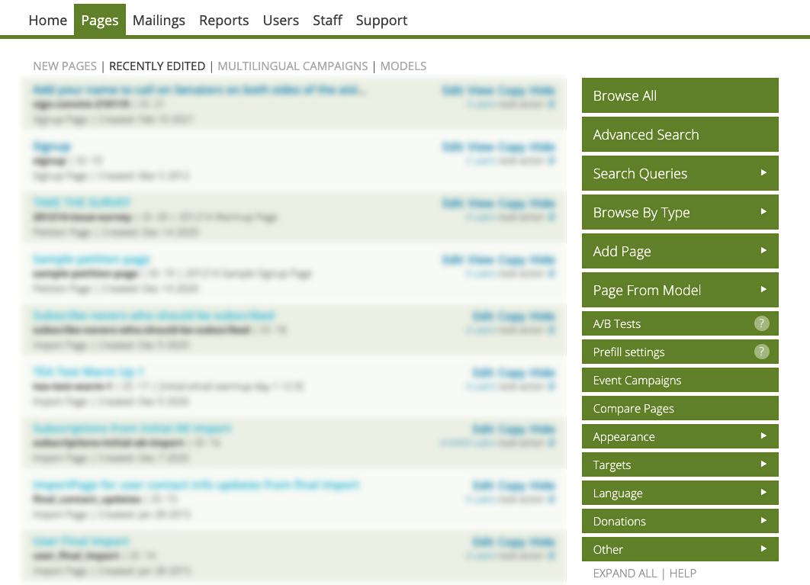
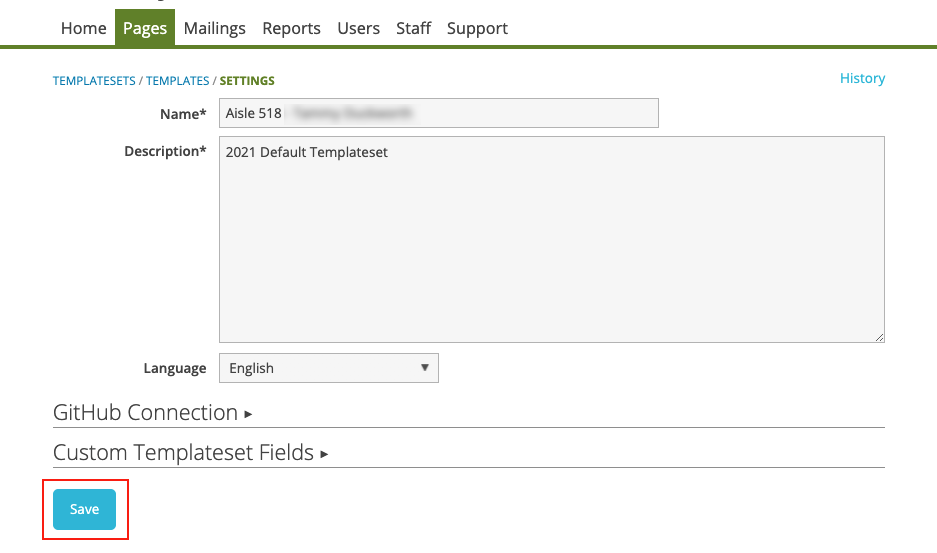
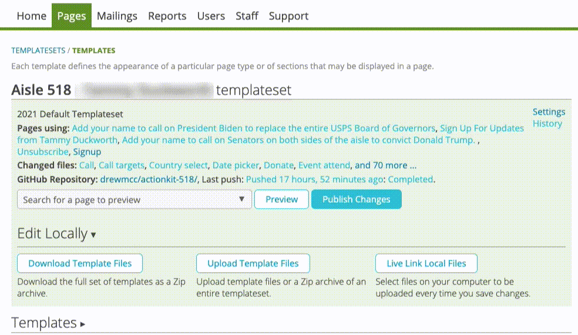
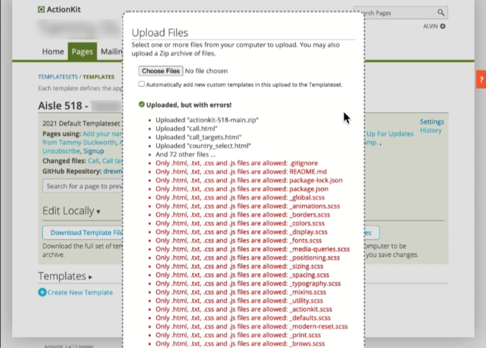
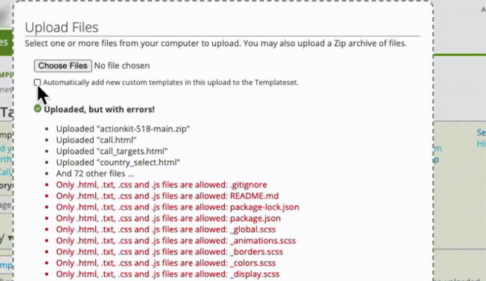

Setting Up ActionKit
This guide will explain how to upload and modify templates on ActionKit.
Table of Contents
Setup and Resources
Before moving to the steps below be sure you or staff have access to the following resources:
-
ActionKit Pages. Be sure any staff working on the
Templateset has access to the
Pages
section of ActionKit. They will need this permission to copy, add,
and update templates as described later in this guide.

{kind=link}
-
ActionKit Default Templateset. Make sure you and
staff have access to the ActionKit default templateset located at
https://example.com/actionkit-template/
.
-
See
Downloading the Templateset ZIP File below for download instructions.
-
See
Downloading the Templateset ZIP File
Grab the laelease of the templateset files here.
Copy the default templateset
The only way to add new templatesets to ActionKit is to copy an existing templateset. Once copied, new templates can be added to replace these default files. Instructions for completing this process are located below.
How to make a copy of the default Templateset
- Open ActionKit and select Pages from the menu at the top of the page
- From the options on the right side of the screen choose Appearance. A menu will appear below.
- From the menu, select Templatesets
- In the "Templatesets" page locate the default Templateset
-
When you find the default templateset click the link labeled
Copy, located on the right side of the table.
- Clicking this link will create a new copy of the default Templateset which will be modified in the following steps.
- A popup window will appear asking "Are you sure you want to copy this record?"
- Click the blue button labeled "Yes, copy it" to copy the files.
- After selecting "Yes, copy it" a copy of the default templates will be created alongside other templates in ActionKit
Renaming the copied templateset
You will need to rename the templateset after copying so it can be easily identified among other templatesets in ActionKit.
- If you have not already copied the default templateset, please see Copy the default templateset section above for instrcutions.
To rename the Templateset
- Locate and click the Settings link for your copied version of the default Templateset

- After clicking Settings you will navigate to the settings page for the copied templateset
- Add a new name for the Templateset in the Name field located near the top of the page.
- Update the description in the Description field, if necessary.
- Update the language in the Language drop down menu, if necessary
-
After updating the information for your templateset, scroll to the
bottom and click the blue button labeled
Save
- You will be working with this templateset in the steps below

{kind=link}
Adding the Templateset ZIP File to ActionKit
-
After you have saved your renamed templateset , click on that new
name to upload the ZIP file containing the new default tempateset.
- For example: if you renamed your templateset to "New Default" you will click "New Default" to access details about the templateset.
- In the Templates page, locate the section titled Edit Locally and click the button labeled Upload Template Files.
-
A popup window named
Upload Files
will appear.
- You will be able to upload the Templateset ZIP file from this window.
-
To upload the Templateset to ActionKit
- First, click the checkbox labeled "Automatically add new custom templates in this upload to the Templateset."
- Next, click the button labeled Choose Files. Your computers File Explorer / Finder window will appear.
- Locate the ZIP file you downloaded in the Downloading the Templateset File section of this guide.
- Select the ZIP file and click Open
 - After selecting your ZIP file you will return to the Upload Files window.
- Be sure the checkbox you selected in the first step is still checked.
- Choose the blue button labeled Upload to add the ZIP file to ActionKit.
ActionKit will encounter errors with unrecognized file types. Click "Upload" to skip these files; the templateset should upload without issue.
 Errors encountered during upload will be shown in red text. These files will be skipped and will not appear in ActionKit. 
{kind=link}
{kind=link}
{kind=link}
- After clicking Upload you will return to the Templates page in ActionKit
- In the Templates page, locate the section titled Templates.
- Click on the Templates section title to view and verify the uploaded template files.
Finally, for your uploaded files to work on live pages, you must click the blue Publish Changes button at the tope of the page.
Next Steps
Now that you've uploaded this zip file, go to Pages > Appearance > Templateset fields in ActionKit to add custom templateset fields.